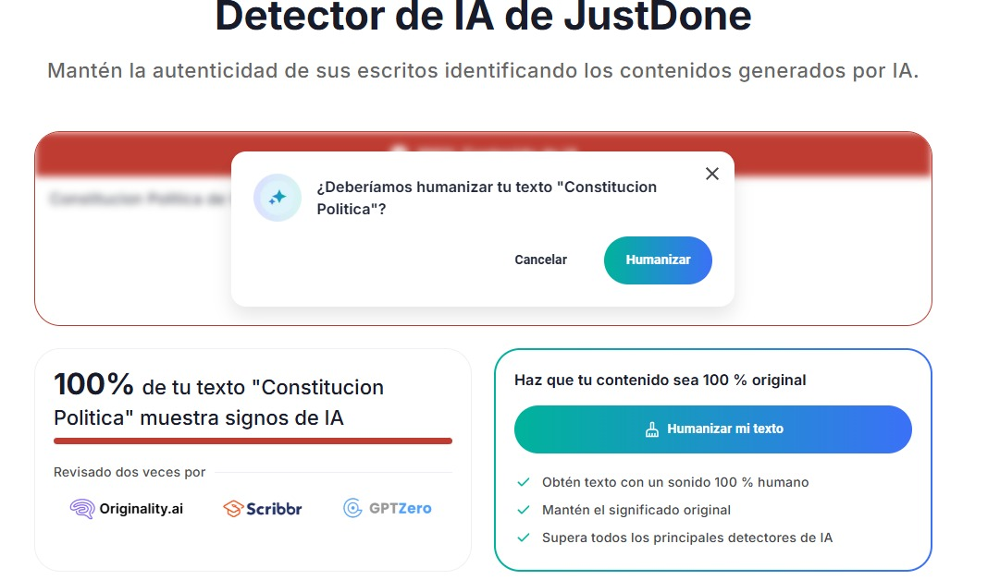

Curso rápido sobre IA
Un curso rápido para entender por qué los detectores de IA fallan más de lo que aciertan
¿Alguna vez usaste un detector de IA y te dijo que tu texto escrito por humanos era hecho por IA? ¿O al revés? En este curso te explicamos por qué pasa eso.
Dato clave: Los detectores de IA no "ven" si algo es IA, solo adivinan basándose en patrones estadísticos. Y a veces se equivocan. Mucho.
Contenido de la Lección 1: Los detectores de IA funcionan analizando la perplejidad y el estallido (burstiness) del texto. Buscan patrones de palabras que son predecibles y gramaticalmente perfectos, algo característico de los modelos de lenguaje. Cuanto menos "sorprendente" es una frase, más probable es que sea generada por IA.
Contenido de la Lección 2: Es fundamental entender que la IA generativa no "piensa". Simplemente calcula la siguiente palabra más probable en una secuencia, basándose en miles de millones de ejemplos. Su "inteligencia" es puramente una habilidad estadística para predecir el texto.
Contenido de la Lección 3: Estudios han demostrado que los detectores de IA pueden ser engañados fácilmente. Por ejemplo, al parafrasear texto generado por IA o al introducir errores tipográficos, la precisión de estos detectores cae drásticamente. Además, textos escritos por humanos a veces son etiquetados incorrectamente como generados por IA, lo que resalta sus limitaciones. Otro gran ejemplo es poner la constitución de un país en un detector de IA, y que este diga que fue escrita por IA, cuando obviamente fue escrita por humanos hace décadas o siglos. Esto demuestra que los detectores no entienden el contenido, solo buscan patrones estadísticos. Por eso hay que enseñar a los estudiantes a usar la IA y no acusarlos satanizando la IA  Aqui podemos ver la constitución política de Colombia, escrita en 1991 por humanos, siendo analizada por un detector de IA y siendo clasificada como "escrito por IA". Esto demuestra claramente las limitaciones y fallos de estos detectores.
Veamos si entendiste lo básico:
1. Los detectores de IA funcionan principalmente usando:
No se
no es un curso real (pero la info sí es real)